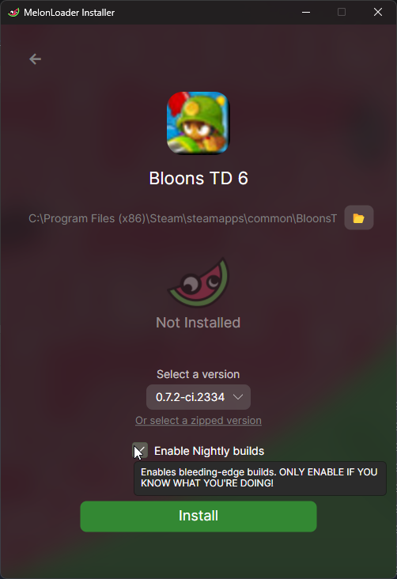
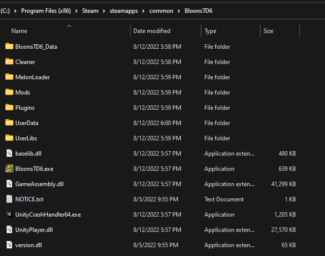

Table of Contents
Skip to Main Content
Install Guide
Use Windows or Linux
Linux via Proton
Have a valid copy of BTD6 on Steam (Windows/Linux) or Epic (Windows Only)
We can't help you if you don't own a legitimately acquired copy of BTD6 on Steam or Epic.
Mods for MacOS, Android, IOS, or pirated clients are not supported.
Download the .NET Runtime
If you don't have or are unsure whether you have the .NET 6.0 (or higher) runtime, you should download it from Microsoft
It is required for MelonLoader to work for IL2CPP games like BTD6.
Install MelonLoader
BTD Mod Helper requires MelonLoader. You should follow
the instructions here for downloading and using the MelonLoader
installer. By default, your BloonsTD6 folder will be located somewhere
like C:\Program Files (x86)\Steam\steamapps\common\BloonsTD6. If that's not correct, you can right click the game in
your Steam library and select "Manage" > "Browse Local Files" to see where they are. For Epic, the default install path
is or C:\Program Files\Epic Games\BloonsTD6.
Linux
If you're on Linux, you need to specifically follow the linux section of the MelonLoader install guide. This involves correctly setting up the environment variables / launch options.
Recommended Version
The current recommended MelonLoader version is Latest Nightly Build of 0.7.2.
Click "Enable Nightly builds" as shown below and use the latest one

After the installation, your BloonsTD6 Folder should then look something like this:

Then, the next time you open the game, MelonLoader will spend some time generating the files it needs and also a new Mods folder within your BloonsTD6 folder. It oughta look similar to

Install BTD Mod Helper
Download the latest BTD6ModHelper.dll from the GitHub releases.
You can also press the shiny green button on the main page or just
use this direct link.
The one and only installation step is put the Btd6ModHelper.dll file into your Mods folder. Make sure it's not renamed
like having a (1) at the end or any spaces added anywhere in the file name.
If you've done everything right, you should see a new "Mods" button in the bottom right corner of the BTD6 main menu when you run the game. (Remember that you need to restart to change mods!)
Install more Mods
You can use the in-game Mod Browser to view mods that have been published on GitHub.
Just press the button in the bottom right corner of the Main Menu to go to the Mods Screen, and then the Mod Browser button in the bottom right. Everything else from there should be self-explanatory!
There is also a website version of the Mod Browser. For installing the mods downloaded from there (and other places), all you need to do is save/put the .dll file into your Mods folder in the same way as BtdModHelper.dll.
The other best place for finding mods is from one of the BTD6 Modding discord communities:
It's not recommended for you to get mods from other sites such as Nexus Mods. Nothing against the site itself, but for BTD6 it just never caught on as a place for quality, good intentioned mods.
Troubleshooting
Common Issues
Internal Failure / il2cpp_init_detour / .NET 6.0 runtime

This is the error you will get if you try to run the game without having the .NET 6.0 (or higher) Runtime. Please download it from Microsoft.
Missing Assembly-Charp.dll

An error such as Could not load file or assembly 'Assembly-CSharp, ...' means that MelonLoader did not install
correctly.
Open up the MelonLoader installer again and use the Uninstall feature. Then, try installing and opening the game again, making any/all of the following changes
- Run the MelonLoader installer as Administrator
- Temporarily disable any antivirus software your computer uses
- Fully delete the
MelonLoaderfolder before reinstalling, double-checking that you're using the recommended version
Other Tips
You should not rename the BloonsTD6.exe file to anything else, or use different names for mod dll files.
It may work to copy the BloonsTD6 install folder to somewhere else and run it from there, but there could be issues that you encounter. The safest alternative is to keep a backup of your unmodded install folder, but always run the game from the actual path that Steam or Epic considers it to be installed at.
Uninstalling
To restore your BTD6 install to completely clean state so that it no longer recognizes you as a modder, you must do ALL of:
MelonLoader files
- Delete or move the
MelonLoaderfolder from the BloonsTD6 folder - Delete or move out the
ModsandPluginsfolders from the BloonsTD6 folder - Delete or move out the
version.dllfile from the BloonsTD6 folder
Mod Helper files
- Delete or move the
BTD6ModHelperfolder from the BloonsTD6 folder - Delete or move the
Disabled Modsfolder from the BloonsTD6 folder